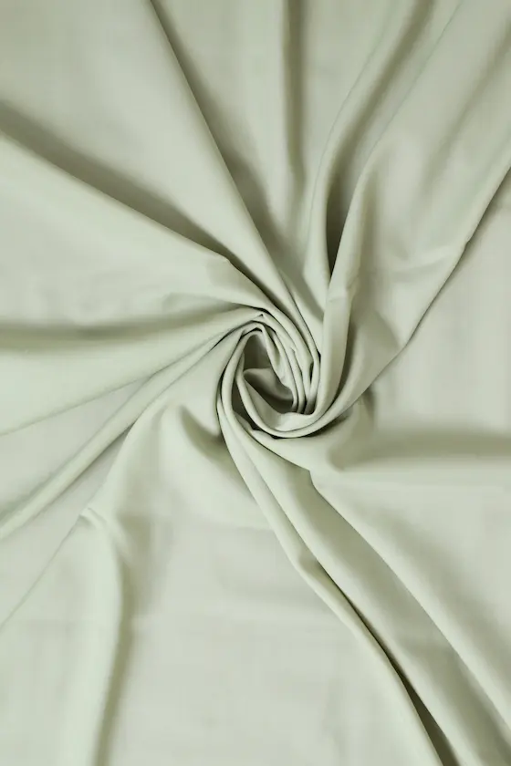
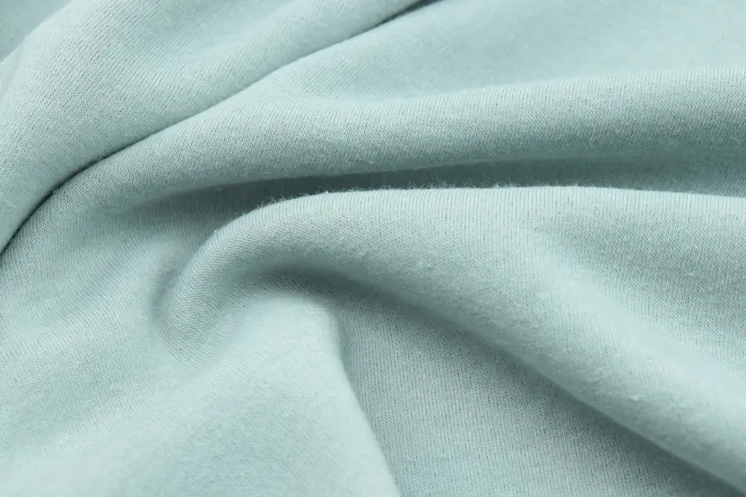
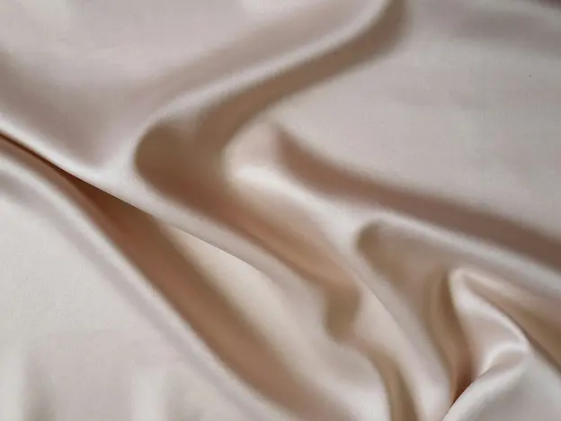
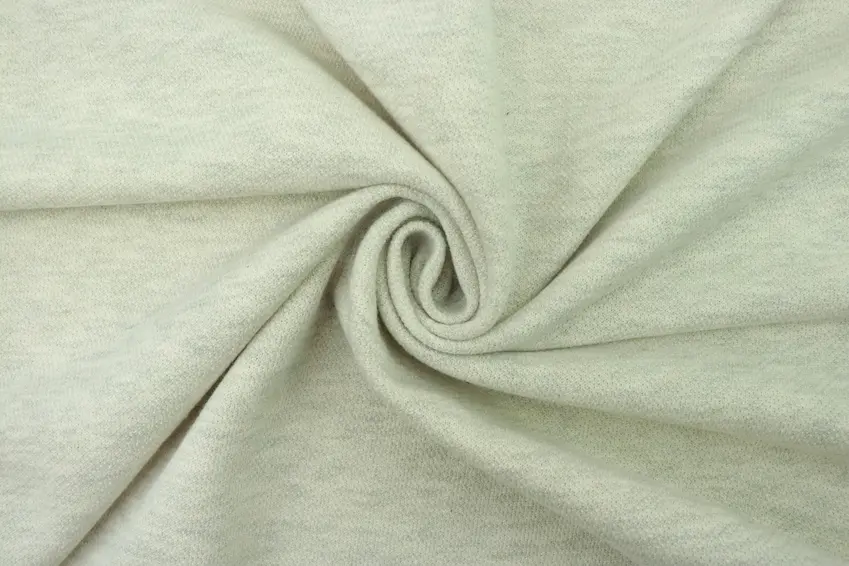

Materialer
Naturlige materialer


Naturlige tekstilmaterialer kommer fra planter og dyr, f.eks. bomuld, hør, uld og silke. De er åndbare, behagelige mod huden og ofte mere miljøvenlige, da de kan nedbrydes naturligt. Mange naturlige fibre er også gode til at absorbere fugt og regulere varme.
Læs mere om naturlige materialer herSyntetiske materialer
 Syntetiske materialer i tekstiler er kunstigt fremstillede fibre, som for eksempel polyester, nylon og akryl. De laves oftest af olie eller andre kemiske stoffer og bruges, fordi de er slidstærke, billige at producere og nemme at vedligeholde. Tekstiler af syntetiske materialer tørrer hurtigt og krøller sjældent, men de er mindre åndbare end naturlige fibre og kan afgive mikroplast til miljøet ved vask.
Læs mere om syntetiske materialer her
Re-generet materialer
 Regenererede tekstilmaterialer er fibre, der laves af naturlige råstoffer, men som bearbejdes kemisk, så de får nye egenskaber. Et eksempel er viskose, som fremstilles af cellulose fra træ. Disse materialer føles ofte bløde og behagelige som naturlige fibre, men kan produceres i større mængder og tilpasses bestemte behov. Dog kan fremstillingsprocessen være ressourcekrævende og påvirke miljøet, afhængigt af hvilke kemikalier og metoder der bruges.
Læs mere om re-generet materialer her